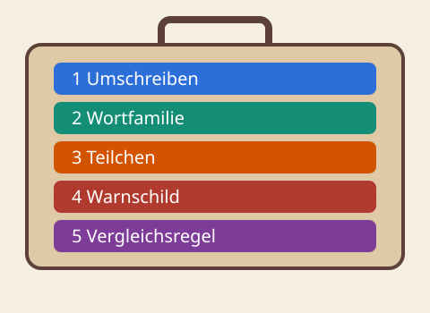

Werkzeug 5: Eigene Vergleichsregeln
Mit einem KI-Tutor lernen
Ein KI-Tutor erklärt dir diese Seite und hilft dir bei den Aufgaben. Wähl deinen Assistenten:
Mit Claude öffnen Mit ChatGPT öffnen Mit Mistral Vibe öffnen
Du nutzt dein eigenes Konto beim Anbieter. Der Assistent ist kein Angebot von lernapps.net: lernapps liefert nur Inhalte und Aufgaben. Die Wahl gilt für alle Seiten, nur auf diesem Gerät.
Zwei Sprachen, eine Familie
Dein Koffer hat vier Werkzeuge. Das fünfte hilft dir, Englisch und Deutsch im Ganzen zu vergleichen. Sophie liest dazu einen kurzen Sachtext. Das Subjekt ist das, was etwas tut, das Objekt das, womit etwas getan wird. Das kannst du danach: Du vergleichst beide Sprachen und erklärst typische Unterschiede in Wortstellung, Wortbildung und Ausdruck mit einer eigenen Regel.
Two languages, one family
(1) English and German belong to the same language family, the Germanic languages. Many words look alike, but the two languages also work in different ways.
(2) In a German main clause, the verb is in second place: "Heute spielt Peter Fußball." English is unusual in its family. It keeps the order subject, verb, object: "Peter plays football today." With "today" first, the order stays: "Today Peter plays football."
(3) In a German subordinate clause, the verb goes to the end: "…, weil er Hunger hat." In English, the order stays the same: "… because he is hungry."
(4) German often joins words into one long word, for example "Fahrradhelm". English often keeps two words: "bike helmet". But it also has closed compounds, such as "football".
(5) Expressions are different, too. A German speaker says "ich habe Hunger", an English speaker says "I am hungry".
Quellen für die Fakten: V2 word order und Compound (linguistics) in der englischen Wikipedia.
| Englisch | Deutsch |
|---|---|
| main clause | der Hauptsatz |
| subordinate clause | der Nebensatz |
| compound | das zusammengesetzte Wort |
Aufgabe
Lösung
Das Verb steht immer am Ende des Satzes.
Das gilt für den deutschen Nebensatz, nicht für das Englische.
Die Reihenfolge Subjekt, Verb, Objekt bleibt meistens gleich. richtige Antwort
Der Text sagt, dass Englisch diese Reihenfolge beibehält, auch im Nebensatz.
Das Verb steht immer an zweiter Stelle wie im Deutschen.
Im Deutschen steht das Verb im Hauptsatz an zweiter Stelle, im Englischen bleibt die Reihenfolge meistens gleich.
Das Englische hält die Reihenfolge Subjekt, Verb, Objekt meistens ein.
Die Werkzeugkarte Vergleichsregel

© CC-BY-4.0Der Koffer ist voll.
| Schritt | Was du tust |
|---|---|
| 1 | Sammle zwei bis drei Beispielpaare: ein deutscher und ein englischer Satz mit derselben Bedeutung. |
| 2 | Suche, was in allen Paaren gleich ist, und schreibe es in einem Satz auf: Das ist deine Regel. |
| 3 | Prüfe die Regel an einem neuen Satz. Passt sie nicht, ändere sie. |
Merke
Eine Regel gilt nur, wenn sie für alle Beispielpaare stimmt. Ein einzelnes Paar ist noch keine Regel.
Übung
Aufgabe
Lösung
Zeile (2)
In Zeile (2) geht es um den Hauptsatz.
Zeile (3) richtige Antwort
In Zeile (3) steht, dass das Verb im deutschen Nebensatz ans Ende geht.
Zeile (4)
In Zeile (4) geht es um zusammengesetzte Wörter.
Zeile (3) vergleicht den Nebensatz in beiden Sprachen.
Aufgabe
Wähle die englische Wortstellung.
Tipp
In englischen Aussagesätzen steht das Subjekt vor dem Verb.
- Gestern sah ich einen Film. → Yesterday … a film.
- Am Montag kaufte Sophie ein Buch. → On Monday … a book.
Lösung
- Yesterday I saw a film.
- On Monday Sophie bought a book.
Aufgabe
Lösung
Richtige Antwort: 1. he stays at home, 2. because, 3. he, 4. is ill
Auch im Nebensatz steht das Subjekt vor dem Verb.
Aufgabe
Schreibe das englische Wort. Achte darauf, ob es ein Wort oder zwei sind.
Tipp
Englisch schreibt Zusammensetzungen manchmal in zwei Wörtern, manchmal in einem.
- der Schulbus
- die Hausaufgaben
Lösung
- school bus
- homework
Aufgabe
Lösung
I have thirst.
Das ist Wort für Wort aus dem Deutschen übersetzt. Im Englischen nimmt man be.
I am thirsty. richtige Antwort
Das Englische benutzt be und ein Adjektiv.
I have thirsty.
thirsty ist ein Adjektiv. Es steht nach be, nicht nach have.
Im Englischen sagt man I am thirsty.
Eine eigene Regel aufstellen
Offene Aufgabe
Wähle Wortstellung, Wortbildung oder Ausdruck. Schreibe in zwei bis drei Sätzen auf Deutsch eine Vergleichsregel und gib mindestens zwei Beispielpaare an (deutsch und englisch).
Eine gute Antwort enthält:
Lösung
Ein Beispiel: Beim Ausdruck sagt man bei manchen Wörtern im Deutschen haben und ein Nomen, im Englischen be und ein Adjektiv. Ich habe Angst heißt I am afraid. Ich habe Recht heißt I am right.
Rückblick auf den Koffer
Dein Werkzeugkoffer ist voll. Fehlt dir ein Wort, umschreibst du es. Kennst du ein Wort nicht, suchst du seine Wortfamilie. Bei einem Verb mit Teilchen liest du beide als eine Einheit. Bei einem Wort, das wie ein deutsches aussieht, beachtest du das Warnschild. Und wenn du Englisch und Deutsch vergleichst, schreibst du eine Vergleichsregel.
Fehler gefunden oder eine Idee für diese App?